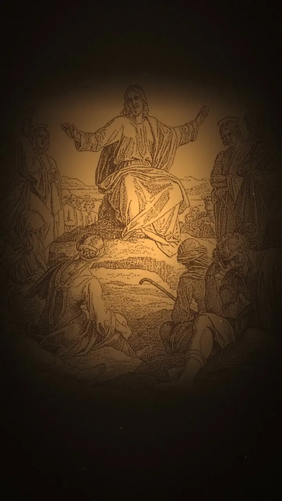
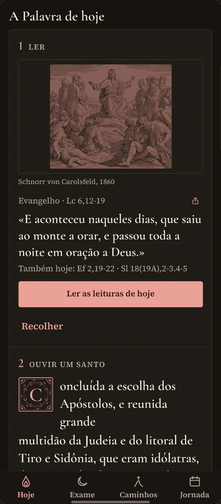
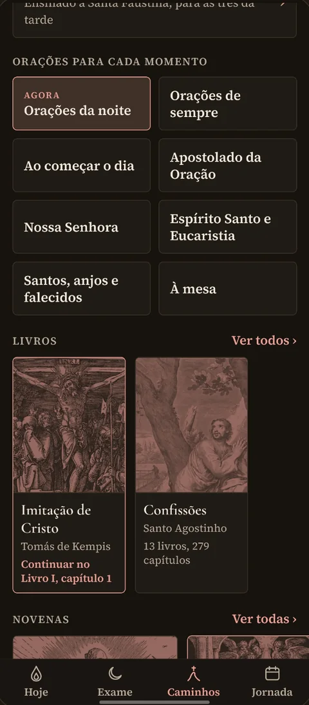
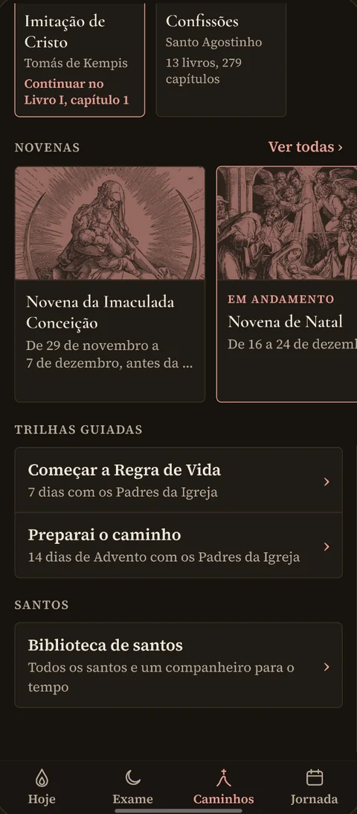
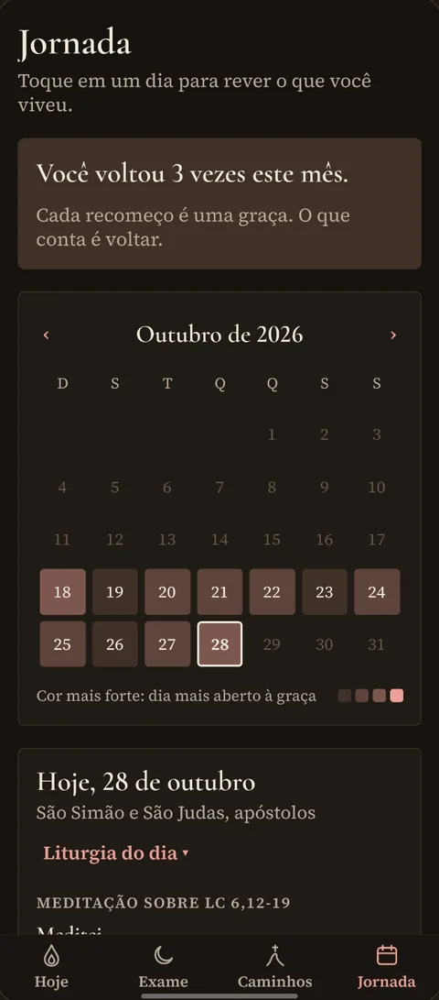

A Palavra de cada dia
O Evangelho e as leituras da missa, todos os dias, com o salmo em estrofes. E a Bíblia inteira, os 73 livros, para ler quando quiser.
Aplicativo católico de oração
Sua vida de oração, leve e inteira, num só lugar. Ofereça o dia pela manhã, ouça a Palavra com os santos e, à noite, entregue tudo a Deus.
Grátis, sem cadastro e sem anúncios. Funciona até sem internet.
Muita gente quer rezar melhor, mas a semana engole o domingo. O Lume reúne o que a alma precisa para cada dia, sem peso e sem culpa, para que a fé acompanhe a vida inteira e não só a missa.
Como as virgens prudentes, guardamos o óleo aos poucos, um dia de cada vez. A chama é graça: ela chega primeiro.Inspirado em Mateus 25

O dia começa com uma oferta e termina nas mãos de Deus. No meio, a Palavra e pequenas práticas que cabem na sua rotina.
A chama já está acesa, porque a graça chega primeiro. Toque nas práticas e veja a luz subir.
Uma oração curta e uma pergunta: hoje, por quem? A sua intenção acompanha tudo o que você viver.
O Evangelho do dia, as palavras de um santo que o meditou e um propósito simples. Depois, as práticas que você escolheu.
Um exame de consciência em cinco passos de Santo Inácio, sem nota, terminando com a bênção da noite.




Sem pular de app em app. A Palavra, a oração e a companhia dos santos, reunidas com calma.
O Evangelho e as leituras da missa, todos os dias, com o salmo em estrofes. E a Bíblia inteira, os 73 livros, para ler quando quiser.
A cada Evangelho, as palavras de um santo que o meditou antes de nós.
Os mistérios do dia, conta por conta, com uma imagem para contemplar.
Ao acordar, à mesa, à noite, a Nossa Senhora e ao Espírito Santo. Muitas também em latim.
Nove dias por uma intenção, sozinho ou com a família e o grupo de oração.
Para encerrar o dia em paz, e um roteiro pelos Mandamentos para preparar a Confissão.
Imitação de Cristo, Confissões, História de uma Alma e outros clássicos, um capítulo por vez.
O Lume segue o calendário da Igreja no Brasil e se veste com a cor de cada dia. Toque numa cor e veja esta página fazer o mesmo.
Vós sois a luz do mundo.Mateus 5,14
Todo dia, um santo escolhido pela liturgia para caminhar com você. São mais de sessenta, com a vida e as palavras que deixaram.
Apps de hábito premiam quem não falha. Na vida espiritual o que conta é voltar, e o Lume foi feito assim.
Esqueceu um dia? Nada de tela vermelha. Você recebe uma palavra de recomeço.
Sem medalhas e sem comparação com ninguém. Só você e Deus, no seu ritmo.
Poucas práticas, vividas de verdade. Lembretes gentis nos horários que você escolher.
O jejum, o silêncio, a pequena renúncia: tudo é oferecido por alguém que você ama.
Sem cadastro e sem anúncios. O que você escreve fica guardado no seu celular.
Leituras, orações e livros já vêm dentro do app. Reze no metrô, no sítio, na capela.
A Palavra, as orações, o Rosário e o exame são grátis, para sempre. O Lume+ é para quem quer rever o caminho, aprofundar e ser acompanhado ao longo do ano.
Por tempo limitado, o Lume+ está liberado para todos. Aproveite.
Tudo para viver bem cada dia.
Para ir mais fundo, no seu tempo.
Cancele quando quiser, nos ajustes da loja. Nada do que você escreveu é apagado.
O Lume - Regra de Vida Católica é um aplicativo de oração para católicos que querem viver a fé todos os dias, com leveza. Reúne a liturgia diária, a Bíblia, o Rosário, orações, novenas, o exame de consciência e a companhia dos santos, seguindo o calendário litúrgico da Igreja no Brasil.
Comece hoje, com uma prática só. A graça chega primeiro.
Está no computador?Aponte a câmera do iPhone para baixar.